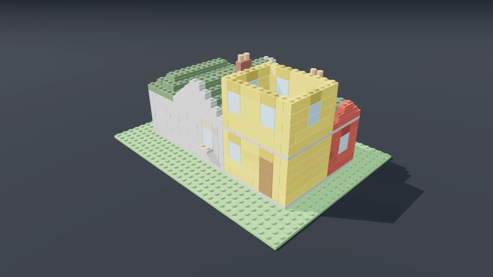
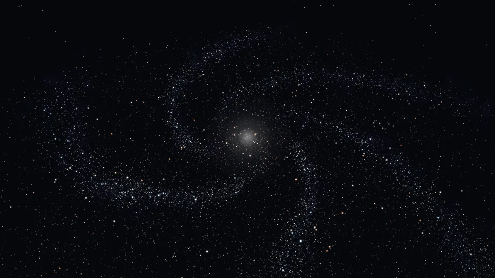
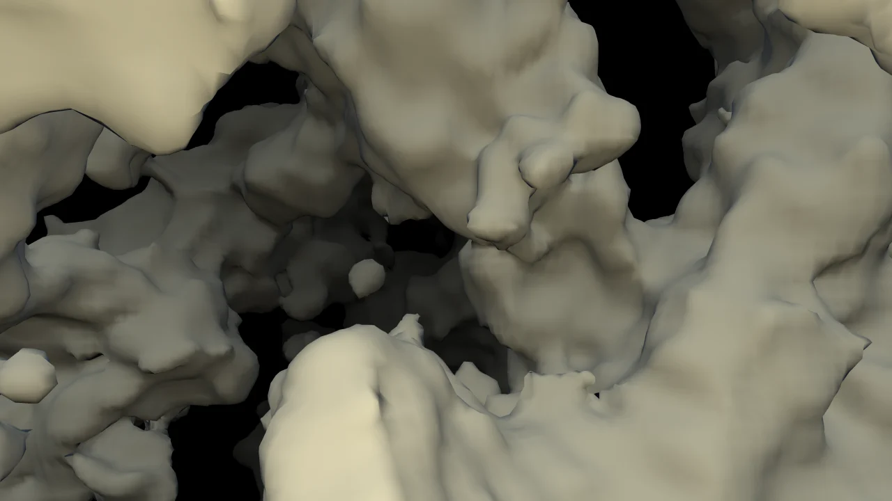
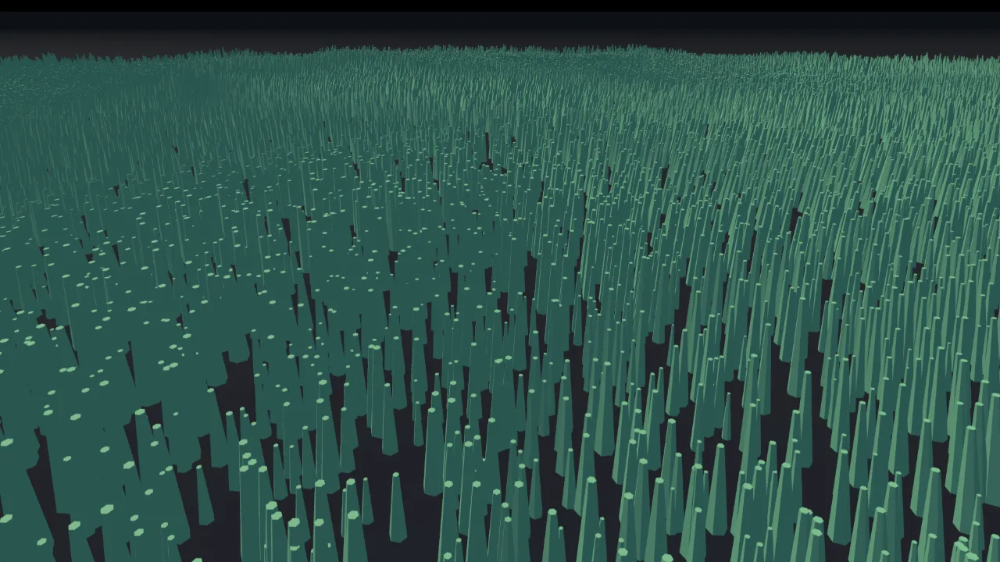
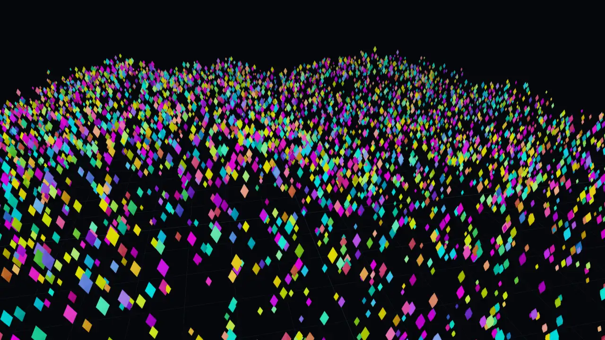
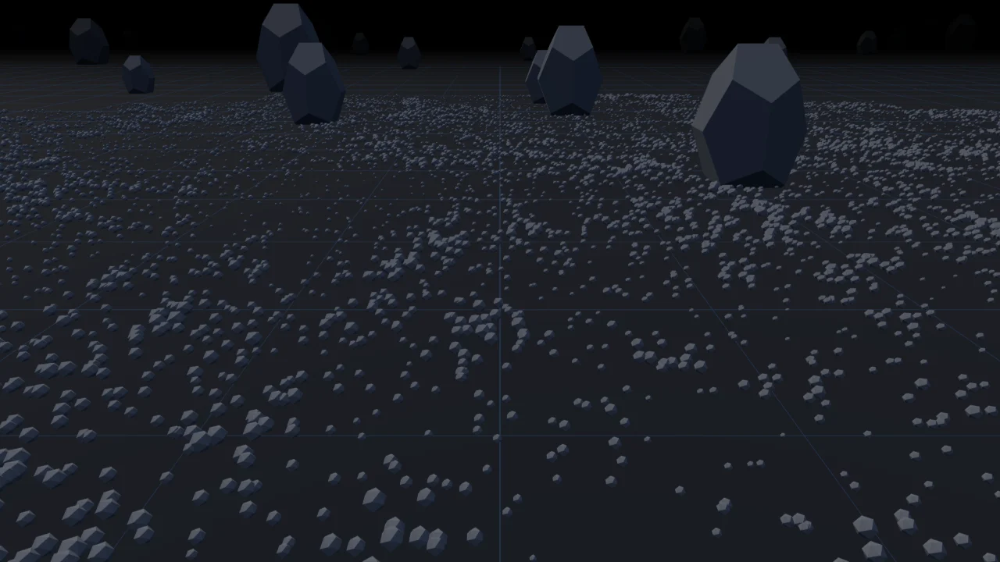
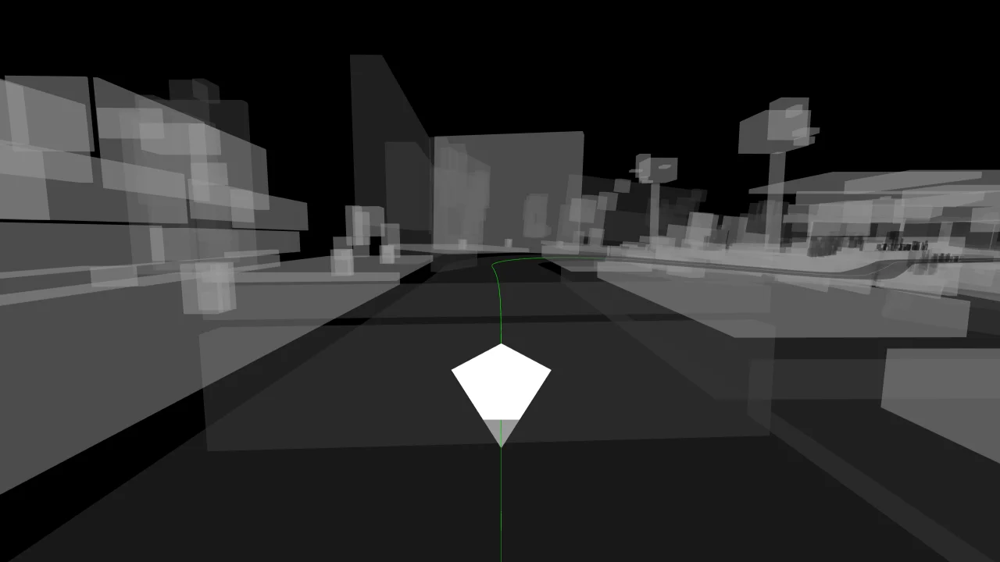
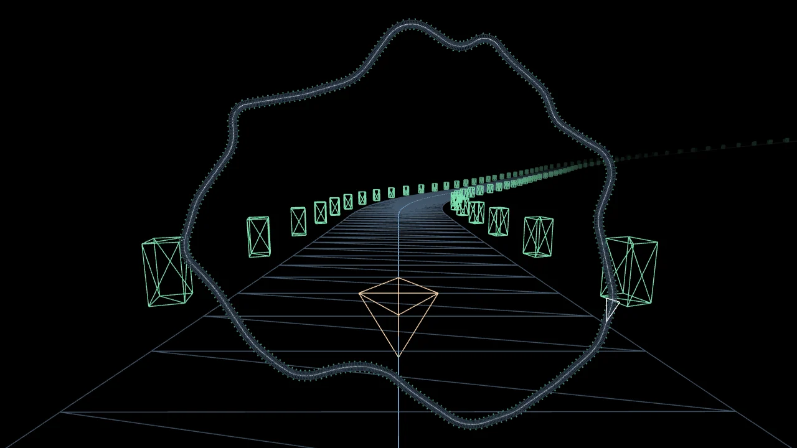
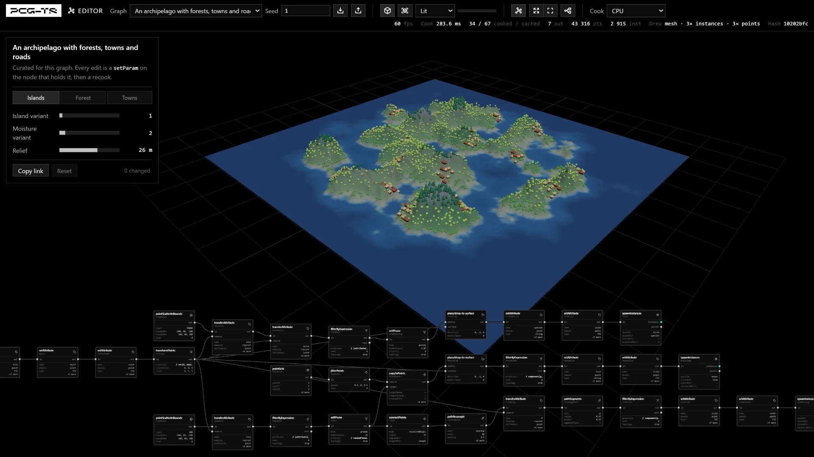

The Eiffel Tower as built in 1889, generated by a PCG-TS graph. The large structure comes from the published plates and everything smaller is placed by rule. At the detail shown in the film, the graph has 3,448 nodes and places 1.3 million rivets, 110.6 million triangles once drawn. The live page opens lighter, and you can add the lacing and rivets from its controls.
Nine demos, running in your browser
Nothing to install. Each one is a live page you can change, and each opens with its own controls.








How they work: Eiffel Tower → racetrack → lanterns →
An editor for every graph
Open any graph, change a value or rewire a node, and see the scene recook behind the nodes. Copy a link to share your settings, or export the graph as JSON to keep what you rewired.

109 graphs to read and copy
Alongside the demos is a corpus of 109 graphs. Each one cooks from its JSON alone, and most teach a single idea. Click one to open it in the editor.

How it works
Build worlds out of rules instead of files. You write the recipe — scatter points over this ground, thin them out with noise, turn each survivor a random amount, put a tree on every one — and PCG-TS runs it. The recipe is a small graph of nodes; running it is called a cook. Feed it the same seed and you get the same world back, byte for byte, on any machine.
PCG-TS is built for real-time use — cooking is budgeted and cancellable so it can run inside a frame, and the field grammar compiles to WGSL to run on a GPU device when one is there.
In code
import { Graph, cook, pointScatterInBounds, jitterPoints, fbm, perlinNoise, remap } from "pcg-ts"; const graph = new Graph(42); // same seed, same output const scatter = graph.add(pointScatterInBounds, { count: 500, boundsMin: [0, 0, 0], boundsMax: [50, 0, 50], }); // A parameter can be a field: this noise is evaluated once per point. const jitter = graph.add(jitterPoints, { amount: remap(fbm(perlinNoise, { seed: 7, frequency: 0.05 }), -1, 1, 0, 1), }); graph.connect(scatter, "out", jitter, "in"); graph.output(jitter, "out", "points"); const result = await cook(graph); console.log(result.stats); // what cooked, what was cached, how long it took
What the library does
Streamed worlds
Levels of 2D or 3D cells, arc sectors along a curve and an unbounded level cook around a viewpoint, and cells it has left are evicted. Cooking is budgeted and cancellable, so it can share a frame with rendering, and a cell comes back the same whatever path the camera took.
GPU cooking
Field expressions compile to WGSL and run on a GPU device. Instance transforms can stay there and be drawn from the same buffer, with no readback. Whatever cannot run there falls back to the CPU and says why.
Buildings from rules
Cut a box into floors, bays, walls and windows, and repeat a rule for a set number of rounds. Ask which pieces touch, so a door lands on a shared wall. Then turn the cells into a mesh or into bricks.
Values that vary over space
A node parameter can be a Field<T>, a function of where it lands, instead of a constant: noise, trig and combinators, evaluated per point. The expression serializes to JSON along with the graph.
Off the main thread
A worker pool cooks graphs on other threads, in the browser and in Node, so a heavy cook does not have to hold up the page.
Any renderer, or none
Graphs produce render-agnostic instance batches. pcg-ts/three hands them to three.js, and the core imports no renderer, so a cook can run headless in Node.
Built to be driven by AI agents
A graph is plain JSON, so an agent can write one, check it and look at the result without any human tooling. Give your agent llms.txt, or run npx pcg agents --write to point a project’s AGENTS.md at the docs.
- Nodes that describe themselves — every node type exposes its pins, param schemas, defaults and description at runtime. The node reference is generated from that.
- A command line that closes the loop —
pcg validate,cook,inspectandrender, each with--json.renderwrites a deterministic SVG that diffs in git. - Errors that state the fix — validation names the offending node, pin or param and lists the valid alternatives.
- A vocabulary to reuse — 37 named primitives ship as
pcg-ts/primitives, cited from JSON by name. A pinned hash that does not match is a hard error, never a near match with a warning.
Technical details
The node, field and graph counts here are for main. The 0.18.0 release on npm has 68 nodes, 64 field functions and 103 graphs, and does not yet include the grammar, box and brick nodes.
Attribute data model
Attributes live on four domains — point, vertex, primitive, detail — as SoA typed-array columns, with promote and transfer between them. The standard point carries transform, density, bounds, color and its own seed.
Graph runtime
A pull-based executor with revision-keyed memoization, time-budgeted and cancellable cooking, per-output partial cooks and serializable subgraphs. Recook an unchanged graph and every node is a cache hit.
Determinism
Every random decision flows from a seed through one hash chain, so the same graph and seed give byte-identical output across runs, platforms, cook orders and streaming paths. Cooking on a GPU device is the one documented exception.
Layered core, optional adapters
A core that imports nothing outside itself. three.js interop, the WebGPU compiler and runtime, the worker pool and the CLI depend on it one way only, each as its own import.